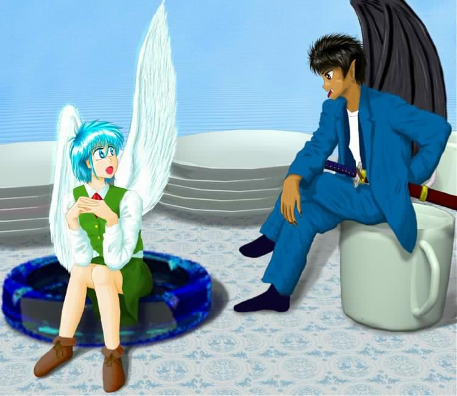
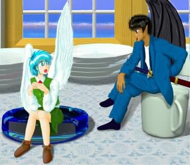

妖精的日常生活
第９話 新しい名前？
作：ジャージレッド
絵師：南文堂さん
−−−−−−−−−−−−−−−−−−−−−−−−−−−−−−−−−−−−−−−−−−−−−−−−−−
※ 前回までのあらすじ
突然、妖精に召喚された幹也クンは、妖精少女ミキちゃんとして生まれ変わった？ 妖精化第１日目はホントにもう“いろいろなこと”がありました！！ 気絶もしたし、トイレでむにゅむにゅもありました。それにお買い物に借金？ さらに、お♪風♪呂♪ うぅ〜ん。現実にこんな一日があったらとっても疲れそう。でも空を生身で飛ぶのはうらやましいかも？ 詳しくは『妖精的日常生活 第８話 にゅるにゅる？』までの各話をお読み下さい。<(_ _)>
−−−−−−−−−−−−−−−−−−−−−−−−−−−−−−−−−−−−−−−−−−−−−−−−−−
「うっ、う〜〜ん」
さわやかな朝の目覚めにというには、ほど遠い感覚で、俺は目覚めた。まるで話に聞くところの低血圧の人みたいに、ぼーっとした頭が、いやいやながらに回転しだしたような感覚だ。うぅ〜〜。身体に力が入らない……。そして、なんとか開けた目に飛び込んできた映像は、俺を戸惑わせるのに充分だった。
（あれ〜〜、何か変だな？ いつもと部屋が違うぞ……）
俺は、弟の幸也と同じ部屋で寝ている。二段ベッドの下の段が俺。そして上の段が幸也の寝場所だ。ところが、布団の中で横になったままの俺が見上げているその視線の先には、二段ベッドの上半分ではなく、天井が見える。しかもなぜかその天井は、いつもの見慣れた合板で出来た天井ではなく、明らかにその質感はプラスチックにしか見えなかった。
（やっぱり俺と幸也の部屋じゃない。それにしても頭がぼーっとする……）
うまく働かない頭で、俺は考えた。俺はどうしてこんな部屋にいるんだろう？ 何か手がかりになるようなものは……？ 布団の中で横になったままの姿勢で視線をさまよわせていると、その視線の先には、ハンガーに掛かったオレンジ色のワンピースがあった。柔らかそうな素材で作られたフリフリのワンピースだ。
「…………！？」
そのワンピースを見た瞬間、俺の頭の中の霧は徐々に晴れてきた。
（オレンジ色のワンピース・女の子・妖精？）
頭の中でキーワードが関連づけられていき、そして……。
「ああっ！！」
一気に昨日のことを思い出した俺は、ガバッと布団をはぎ取ると、自分の姿を確認した。まずは胸を触ってみると、小さいながらも“ふにゃっ”とした柔らかい感触が手に伝わってきた。次に覚悟を決めて股間に手をやると、そこには余分なものは何もない、すっきりとした感覚があるだけだった。なんか寂しい。
「やっぱり、妖精の女の子だ……。ふうぅぅ……」
昨日の出来事が夢じゃなかったことを確認した俺は、深いため息をつくと、のろのろと着替えをし始めた。今日は月曜日なんだけど学校を休んで、戸籍変更の為に区役所に行くことになっている。だから学校には行かないのだけれど、ワンピースではなく制服を着ることにした。かわいい系の服は、基本的に今後のバイトの為の仕事着を兼ねているから、普段着であって普段着でないようなものだからだ。やれやれ……。
というわけで俺は、パジャマ代わりに着ていた膝下まである大きなだぼだぼのＴシャツを脱いで、ショーツだけという姿になった。ちなみに今、身につけているショーツはピンク色だ。ちゃんと教えてあげたから、イタズラ電話なんかしないでねっ♪
−−−−−−−−−−−−−−−−−−−−−−−−−−−−−−−−−−−−−−−−−−−−−−−−−−
※ えへへっ、言い訳です。
“膝下まである大きなだぼだぼのＴシャツ”なんて、いつの間に買ったのかって？ うぅ〜ん、そんな野暮なことは言いっこなし！ 確かに第４〜５話の“お買い物編”では出てこなかったけど、“お部屋セット”にオプションとして付いていたということにしといて下さい。私も、パジャマやネグリジェを買うのを忘れていたなと気が付いた時には、もう遅かっんです。だって私ってば、夏場にはパジャマなんか着ずに、下着だけで寝る主義だし……。というわけでミキちゃんが、かわいいネグリジェを着ていないのは、全て作者の責任です。ごめんなさい、ごめんなさい、ごめんなさい……。m(_ _)m
−−−−−−−−−−−−−−−−−−−−−−−−−−−−−−−−−−−−−−−−−−−−−−−−−−
ショーツだけの姿になった俺は、“お部屋セット”の中に付いている鏡の前に立つと、自分の姿を改めてジッと見つめた。何だか昨日は色々ありすぎて、落ち着いて自分の裸を見ることも無かったので、ちょっと好奇心が出てきたのだ。やっぱり“男の子”だもんね。
鏡の中には、一昨日までの俺とは、まったく違う姿が映っていた。青い髪と青い目の、ちょっと異国風の顔をしたショートカットの女の子。今は羽を出していないから、対象物さえなければ、人間の女の子と見た目は変わらないが、本当は身長が約２５ｃｍしかない、華奢な妖精の女の子……。それが今の俺だ。
俺は鏡を見ながら、その手をゆっくりと上に持ち上げると、小さくふくらんだ自分の胸を触ってみた。ふにゅっとした感触が手に心地よい。そしてゆっくりと触り続けていたのだが、昨日、風呂場で珠美香に触りまくられた記憶がふと頭をよぎった瞬間、その感覚が爆発的によみがえってきた。記憶だけでいっちゃいそう……。
「んっ、あっ、……小さいけれど、感度、いいんだ……」
本来、今の時期は妖精の発情期である“妖精狂いの季節”を外れている。だから性感帯はそれほど敏感にはなっていないはずなのに、俺の小さな手の中に収まっているその胸からは、じんわりとした得も言われぬ快感が伝わってきた。もっともさすがに発情期ではないので、それ以上、快感を追求したいという欲求は沸き上がらなかったのだけれども……。それでもとにかく気持ちよくて、はにゃ〜ってなっちゃう……。
「んっ、んっ、あぁっ、ふうぅ。……でも、今ですらこんなに気持ち、いいんだもん。“妖精狂いの季節”になったら、どんなに気持ちいいんだろ？」
そんな独り言をつぶやきながら、俺は耳まで真っ赤になってしまった。鏡に映っている俺の白い肌は、ほんのりとピンク色に染まって、我ながら自分の色っぽさにくらくらしそうだ。その時、ちょっとした気まぐれで、右手の親指を噛んで、いじいじと恥ずかしがっているポーズをとると、ちょっと演技を入れつつ、セリフを言ってみた。いや、特に深い意味はないんだけどね。
「見ちゃイヤ……」
妖精特有のキンキンと響く高い声もかわいらしい。俺は、ぞくぞくぞくっと、背中に何かが走った感覚を覚えると、それに伴い頭の中で何かのスイッチが切り替わったのを感じた。それから、誰にも見られていないという気安さもあって、俺の行動は、徐々にエスカレートしてきた。でも、しょうがないよね。
「お願い。もっと強く抱いて、ぎゅっと、そう、離さないで……」
腕を胸の前でクロスさせ、右手で左肩を、左手で右肩を掴むと、ぎゅっと抱きしめるポーズをとった。そのままくるりと回れ右をすると、鏡に背中を映した俺は、首を回してその鏡に映った姿を見た。ちょっと体勢が苦しいけれど、妖精の女の子の華奢で柔らかな体は、しなやかに俺の要求にこたえてくれた。
鏡の中に映る妖精の女の子は、何者かに抱きしめられているように見える。俺を抱きしめる華奢で白い手。それを見ているうちに、俺は本当に誰かに抱かれているような気がしてきた。でも、鏡に映るその手は、どう見ても女の子の手だ。それを見ているうちに何だかおかしな気持ちになってきた。
やっぱり“妖精狂いの季節”になったら俺も、妖精の女の子と“巣ごもり友達”になって、日がな一日、抱き合ったり、触りあったり、それからあんなことやこんなことまで、色々とやっちゃうんだろうか……。
「“妖精狂いの季節”がきたら、俺……、いったいどうなっちゃうんだろう？ やっぱり妖精の女の子と“巣ごもり”しちゃうのかな？ それとも妖精の男の子と……！？」
思考がそこまでいった途端、俺の頭になぜか海斗の顔が浮かんできた！
「ばっバカ！ よりによって何で海斗なんかと……！？」
さっきまでの雰囲気に酔っていた俺は、一気に正気に戻ると、自分の行動に嫌悪感を覚えてしまった。それになんといっても恥ずかしさでいっぱいだよ。もうっ！ 何でこんな時に海斗のことを考えなくちゃいけないんだよ！ 今の俺は妖精の女の子だけど、俺は、俺は、……男なんだぞ！！
頭の中が混乱して、心臓もドキドキ、バクバクしているし、ああっ、もう何が何だか……。それでもなんとか気を取り直した俺は、ショーツとお揃いになっているピンクのシャツを身につけると、制服を着ることにした。その制服は、珠美香の陰謀によってミニスカートになっていたのだが、気が動転していた俺は、そのことに気付く余裕を無くしていた。（作者注：いつ気がつくかな？）
ワンピースタイプの制服を、頭からすっぽりとかぶると、買ったばかりの靴下を履き、更にはブーツのような靴まで履いた。家の中で靴を履くなんて、人間にしてみたら変なんだけど、妖精にしてみたら外に出ても地面を歩くようなことはまず無いから、妖精の履く靴なんて、靴下の延長のようなものなのだ。
全てを身につけ終わると、俺は鏡の前で着こなしをチェックした。よし、どこにもおかしなところはないぞっと。どこから見てもかわいい妖精だ……。って、違う！ いかん、いかん。俺ってば、実際のところ本当にかわいすぎるから、鏡を見ちゃうとダメなんだ。魅了の魔法を自分でかけちゃう……。
というわけで、身だしなみのチェックも終わり、“お部屋セット”を出て、台所に行こうと思ったのだが、その前に俺は、１つの決断を迫られていた。これは非常に大事な決断であり、妖精として自立して生きていく為には避けては通れない決断であった。しかしこの問題はどう決断しても、いたくプライドを傷つけられることは間違いない。つまりは、それほど難しい問題であったのだ。……大袈裟すぎかな？
「トイレ……。どうしよう？」
朝のトイレ。もちろんトイレをすること自体は問題ない。たった一日とはいえ、妖精の女の子の身体にも慣れてきたから、今更女の子なトイレが恥ずかしいとは言わない。問題は妖精なトイレなのだ……。
今の俺には選択肢が２つある。１つは誰かに手伝ってもらって、人間用のトイレで用を足すか。もう１つは、昨日買ったこの“お部屋セット”にオプションとして付いていた“オマル”を使用して用を足すか。その２つに１つを選ばなくてはならない。しかし、どちらも選びたくはない選択肢ということでは、似たようなものだ。
他人の手を煩わせることが無いという点では“オマル”は魅力的だ。しかし終わった後で、きちんと始末しないといけない手間がある。一方、普通のトイレを使えば、後で始末する手間が省けるけれど、誰かに手伝ってもらわなければ、用を足すことが出来ない。なぜなら妖精サイズでは、人間用の便器に腰掛けることが出来ないからだ。どうしても誰かに抱きかかえてもらわないと、オシッコ１つ満足に出来やしない。
さんざん悩んだ末、俺は結局、“オマル”を使うことにした。なるべく自分のことは自分でなんとかしたかったからだ。覚悟を決めると、せっかく履いているショーツを脱いで、“オマル”をまたいでしゃがみこんだ。
シャーーーッ
音をたてて勢いよく飛びだした液体は、“オマルの中に吸い込まれていった。しかし、普通（？）の部屋の中でオシッコをするというのはどうにも妙な感覚だ。用を足し終わると、大事なところを特製の柔らかい紙で拭いて、その紙を“オマル”の中に落とすと、“オマル”に蓋を閉めた。
これで後は中の汚れ物を普通のトイレに流して、“オマル”を風呂場で洗えばＯＫだ。とりあえず後始末は、文字通り後に回して、俺は再びピンクのショーツを履くと、羽を背中から出して、いよいよ“お部屋セット”を飛び出たのだった。
−−−−−−−−−−−−−−−−−−−−−−−−−−−−−−−−−−−−−−−−−−−−−−−−−−
※時間経過加速計画断念！？
実は第９話から始まる、妖精的日常生活・第２期においては、物語中の時間経過を加速して、さっさと話を進める計画でした。ところが実際に時間経過を早めた話を作ろうと書きかけたのですが、これがなかなか難航いたしまして、結局、第１期とほぼ同じペースでストーリーを描写していくことになりました。どうやら物語の時間経過に慣性がついてしまったようです。というわけで時間経過加速計画は断念いたしました（笑）。しかしそれはいいとして、こうなってくると、いつになったらラストを迎えることが出来るのか、ちょっと分からなくなってきました。果たして何年後になるのか？ 洒落でなく、めまいがしてきます。果たして作者と読者の皆様とどちらが先に力つきるのでしょうか？ (-_-;)
−−−−−−−−−−−−−−−−−−−−−−−−−−−−−−−−−−−−−−−−−−−−−−−−−−
「おはよう。ミキ。制服姿もかわいいな。やっぱり女子高生はミニスカートだよな」
台所まで飛んでいった俺を迎えてくれたのは、なぜかこともあろうに海斗の挨拶だった！！
「海斗！ 何で海斗が朝っぱらからうちにいるんだよ！！」
ずっこけた俺は、危うく失速して落下しそうになったが、なんとか体勢を立て直すと、怒鳴るように叫んだ。しかし海斗は何の反応もせず、テーブルの上でなぜか朝食をとっている。もうっ！ 図々しいったらありゃしない！ しかも、制服のミニスカートのことを言うだなんて……。なんてイヤらしい……。
もぐもぐもぐもぐ……。ぱくぱくぱくぱく……。
自分から声をかけてきたくせに、海斗は返事もしない。テーブルの上にどっかりと座り込むと、黙々と食事を続けている。まったく卑しいヤツだ。朝食を食べるお金すらケチってるんだろうか？ この守銭奴は。
「こら、食べてばっかりいないで返事ぐらいしろよ！ この、バ海斗！」
悪口でも言えば反応するかと思いきや、まったく反応がない。この食いしんぼ妖精め！ 俺が自分のことを棚に上げてそう思っていると、母さんが話しかけてきた。
「あら、ミキちゃん。おはよう。昨日は慣れないところだったけれど、良く眠れたかしら？」
母さんは、海斗が我が家で朝食をとっているという“異常事態”をものともせず、いつもと変わらぬ調子で挨拶をしてきた。のほほん過ぎるよっ！ 母さんは！
「おはようじゃないよ、母さん。何で海斗がうちでご飯を食べてるんだよ！」
抗議の声をあげる俺を無視して、母さんは海斗にご飯のお代わりを出している。海斗は海斗で、当たり前のようにご飯を受け取ると、ばくばくとがっついた。まったくアレで元女子大生だっていうんだから世の中わからないよなあ。ああっ、今朝、一瞬でも海斗のことを考えてしまった自分が情けない。
「おはよう。ミキ姉ちゃん。海斗さんは、何だかミキ姉ちゃんに話があるっていうことで来たみたいよ」
珠美香が、もぐもぐと朝ご飯を食べながらそう言った。行儀悪いぞ、珠美香。お前も妖精の男になった方がいいんじゃないのか？ ちなみに台所のテーブルには珠美香と幸也が席に着き、朝食をとっている。父さんはもうとっくに会社に出かけているので姿は見えない。いつも早いんだよな。父さんは。
「……！？ おはよう珠美香。昨日はありがとうな。学校で江梨子ちゃんと早苗ちゃんによろしく」
珠美香の顔を見た途端に、またしても昨日の感覚がよみがえりかけた。しかしなんとかそれを押しとどめて俺がそう返事をすると、その時には既に食べ終わったのか、珠美香は、ばたばたと立ち上がりかけていた。
「わかったわ、ミキ姉ちゃん。ちゃんと伝えとくから。私、今朝は高校受験の為の補修授業があるから早く出るわね。じゃあお母さん、いってきまーす。あっ、海斗さん。いってきます。また来てくださいね」
珠美香はそう言い残すと、さっさと学校に行ってしまった。中学生もなかなか忙しいようだ。しかし珠美香、最後の一言は絶対によけいだぞ。
「いってらっしゃい。珠美香。それから幸也も早く食べなさいね。せっかく今日はいつもと違って早く起きたんですからね。……それからミキちゃん。海斗クンは、ミキちゃんが女の子らしい喋り方をしないと返事してくれないんじゃないかしら？ 昨日、海斗クンがそう言ってたでしょ？」
うっ、そう言えばそうだった。くそう、何の用件があるのか知らないけれど、さっさと済ませて、はやいとこ海斗には帰ってもらおう。というわけで覚悟を決めて……。
「おはようございます。海斗さん。朝早くから、いったいどのようなご用件でおいで下さったのかしら。昨日の今日ですから、申し訳ないんですけど、お金はまだ用意出来てませんの……。というわけで、今日のところはお引き取り願えませんか？」
なるべく、女の子っぽい言葉遣いで喋ってみたつもりだけど、疲れる。それに何だか海斗相手だと、冷たい言い方になっちゃうな。別にいいんだけどさ……。気に入られようなんて思ってないし……。
「ごちそうさまでした。……ミキ、オレは別に集金に来たわけじゃない。昨日は口約束だけだったかったからな。とりあえず誓約書を作ってきたから、３００万円の支払いを承諾するという内容の誓約書にサインしてもらおうか。特に異存はないよな？」
口のまわりを手の甲で拭きながらそう言うと、テーブルの上であぐらをかいてご飯を食べていた海斗は、すくっと立ち上がった。そしてそのままコウモリの羽を羽ばたかせて、電子レンジの上に置いてあった丸めた紙を掴むと、そのままテーブルの上に戻ってきた。しかし自分と同じサイズの存在が、羽ばたいて空を飛ぶっていうのは、やはりどことなくシュールなものがある。
「すみません、喜美香さん。ちょっとこの誓約書を広げたいので、テーブルのここを、少し空けてもらえませんか。それから黒インクのボールペンがあれば、お借りしたいのですが、よろしいですか？」
俺以外に喋る時は、とても丁寧な言葉遣いの海斗に言われて、母さんは素直にテーブルの一角を片付け始めた。何だかうちの家族って、みんな海斗に丸め込まれているような気がするんだけど、大丈夫かな。
朝のツーショット？
（幸也クン撮影による）

ｂｙ南文堂 様
「テーブルの上はこれでいいかしら？ ボールペンは今持ってくるから、ちょっと待っててくださいな」
母さんがボールペンを取ってくる間に、海斗はくるくると丸めた誓約書を広げだした。用紙は普通のＡ４版サイズの紙だけど、妖精サイズにしてみたら、小さな絨毯並みの大きさだ。いくら軽いからといっても、よくもまあ飛んで持って来られたもんだよ。ホント、金儲けに関しては努力を惜しまないヤツだな、海斗って……。
「さあ、ミキ。きちんと読んで確認しろよ」
紙の端がまだ少し丸まっていて読みづらいけれど、内容を把握するのに支障はなかった。だってそこに書いてある文章って、たった数行なんだもん。
「……分かったわよ。読めばいいんでしょ。何々、私、長谷川ミキ（旧名：長谷川幹也）は、滝沢海斗（旧名：滝沢汐海）に命を助けられたことに対する対価として、金３００万円を支払うことに同意するものである。なお支払い方法およびその変更については適宜双方の話し合いによって決めるものとし、金利についてはこれを支払わない。以上」
誓約書というものを見たのは初めてなので、この文章が妥当なのかどうか、俺にはわからなかった。しかし、昨日聞いていた話とは食い違いもないし、まあ、サインしないとしょうがないのかな……。とにかくさっさとサインして、海斗にはなるべく早めに帰ってもらおう……。
「で、ここにサインしろって言うのね？」
俺は海斗に向かってそう確認すると、海斗は大きく頷いた。
「そういうこと。そこに名前を書く欄が２つあるから、旧名とカッコしてあるほうに人間の時の名前。もう一方の妖精名というほうに、新しい名前を書いてくれ」
俺と海斗がそういったやり取りをしていると、朝食を食べ終わった幸也が、話に加わってきた。
「ねえ、ミキ姉ちゃん。ミキ姉ちゃんの名前は、人間だったときの名前、『幹也』から音を取って『ミキ』っていうことになってるけど、字はどうするの？ 漢字には直さないの？」
言われてみて気がついたが、そういえば『ミキ』にどんな字をあてるかなんて考えてなかったな……。
「あら、そうね。母さんも気がつかなかったわ。でもせっかくだから、ついでに『ミキ』という名前自体も変えちゃいましょうか？」
ボールペンを持ってきた母さんも話に加わると、幸也と２人で、どんな『ミキ』という発音にどんな漢字を使うのか、それともまったく新しい名前にするのかという話題で盛り上がり始めた。おーい、当事者は俺なんだけどなぁ〜。
「ちょっと待ってくれよ。今更、まったく別な名前にするのもめんどくさいから、『ミキ』のままでいいよ」
実際のところ、今までも、友人達から『幹也』を省略して『みき』と呼ばれたことがないわけじゃない。その時は女の子みたいな呼ばれ方に反発したものだったが、今となっては『ミキ』という呼ばれ方がピッタリとくる妖精の“かわいい”女の子だから、『ミキ』と呼ばれても強い反発はない。だって実際にかわいいんだからしょうがないでしょっ！
「そうよねえ、昨日一日でミキちゃんと呼ぶのに慣れちゃったから、名前の呼び方は『ミキ』のままのほうが良いのかしらね。それに母さんの名前が『喜美香』だから、そこから字をとって『美喜』でもいいわね。……じゃあミキちゃん。ミキという名前にはどんな漢字を当てたらいいかしら。何か希望はある？」
こうして俺は、母さんと幸也の３人で、『ミキ』という名前にどんな字を当てるかを考えだした。そして色々考えたのだが、結局、『美姫（みき）』になった。ちょっと恥ずかしいかな。“美しい姫”だなんて……。
−−−−−−−−−−−−−−−−−−−−−−−−−−−−−−−−−−−−−−−−−−−−−−−−−−
※ようやく決定！
第１話で妖精化した幹也クン。とりあえず暫定的に『ミキちゃん』と呼んでいましたが、第２期においては、そろそろ正式に妖精少女としての名前を決定しなくてはなりません。というわけで第８話までは『ミキちゃん』、第９話からは『美姫ちゃん』と呼んであげてください。よろしく御願いいたします。_(._.)_
−−−−−−−−−−−−−−−−−−−−−−−−−−−−−−−−−−−−−−−−−−−−−−−−−−
「なんだ、『ミキ』というのは役所に届ける予定の正式な名前じゃなかったのか？」
俺と母さん、そして幸也の３人のやり取りを聞いていた海斗が、ちょっとあきれたような口調でそう言った。どうやら海斗は、俺の妖精少女としての正式な名前が『長谷川ミキ』だと思っていたらしい。そういや海斗にはなんにも説明してなかったような……。
「あら、話してなかったかしら？ 『ミキ』というのは、幹也という名前を女の子っぽくした『呼び名』だったのよ。とりあえずのね。だって、こんな妖精少女の姿で『幹也』と呼ばれるほうが恥ずかしいでしょ。妖精になっただけでなくて性転換もしちゃったことがすぐに分かっちゃうしね。というわけなんですけど、わかっていただけたかしら？」
ツンツンとした高飛車な雰囲気をプンプンと漂わせつつ、俺は冷たい声で海斗に話した。あぁ〜ん。何だか海斗相手だと、タカビーな言い方って快感だよ〜。女の子っぽいかどうかはともかく、タカビーな話し方ってくせになりそう♪
「そうだったのか。じゃあこの誓約書は書き直してこないと意味ないな。役所には『長谷川ミキ』じゃなくて『長谷川美姫』で登録する予定なんだろ。戸籍とは違った名前が書いてある誓約書にサインしてもらってもしょうがない。……念のためにあと一回だけ聞くけれど、漢字の『美姫』じゃなくてカタカナの『ミキ』のままですませようという気はないのか？ それならこの誓約書がそのまま使えるんだけどな」
海斗は残念そうにそう言うと、広げたばかりの誓約書を丸め出した。ふふっ、例えどんなことでも海斗にダメージを与えられるのは良い気分だなあ。『美姫』という名前にちょっと恥ずかしい気持ちもあったけれど、何だかもう、どうしても『美姫』にしたい気分になってきたよ。
「ダメです。私はカタカナの名前よりも漢字で名前を書きたいですから、漢字で『美姫』と書く名前を正式な名前にしたいです。海斗さんだって、漢字の名前にしていらっしゃるでしょ。なんで私は名前を漢字で書いちゃいけないんですか？ 私は『美姫』という漢字と名前が気に入っていますのよ」
くうぅ〜、海斗のヤツ困ってる困ってる。やあぁ〜い。いい気味だね。
「しょうがないな。こんなことなら、きちんとした名前を書かずに『甲』、『乙』ですませとけば良かったぜ。……しょうがない。じゃあ今日のところはこれで帰るとするか。新しい誓約書を作ったらまた来るから、サインはその時にしてくれ」
ちぇっ、海斗のヤツまた来るのか。
「ごめんなさいね。お手間取らせちゃって……」
母さんが海斗に謝っている。まったく母さんったら人が良すぎるよ。ミスしたのは海斗のほうなのに。
「いえ、かまいませんよ。今日はたまたま、この近所に仕事がありましたから、ついでにと思って慌てて誓約書を用意しただけですし。それにきちんと確認せずに誓約書を作ったのはこちらのミスですからね」
そうそう、ミスしたのは海斗。こっちは何にも悪くないぞっと。
「それでは、用事がすんだらお帰りいただけますか？ 今日はこれから区役所に行って、名前を含めて戸籍の変更をしてこなくてはいけませんので」
海斗に対して冷たくそう言ってると、母さんが俺に注意してきた。
「ちょっと美姫ちゃん。海斗クンに対して冷たすぎるわよ、その言い方。美姫ちゃんはかわいい妖精の女の子だから、もっとかわいらしい言い方をしたほうがいいんじゃないかしら。ねえ、海斗クンもそう思うでしょ？」
そんなこと言っても母さん。別に海斗に対して、俺がかわいらしくしなくちゃいけない理由なんてこれっぽっちもないし……。俺が心の中でちょっと拗ねていると、母さんの質問に対して海斗が律儀に答えだした。もうっ、海斗のこういうところってなんかイヤだな。俺に対する態度と母さんに対する態度が全然違う。海斗ってば裏表ありすぎっ！
「まあ確かにちょっと冷たい感じがしますが、男言葉で話されるよりはずっといいですから。まあ、女言葉に慣れる為と考えれば、これでいいと思いますよ」
海斗はそう言うと、今度は俺に向き直って言葉を続けた。
「というわけで、オレは帰る。まあ今日明日中に見つけろとは言わないが、なるべく早めにバイト先を見つけるようにしろよ。ああ、それから、いきなり『フェアリーズ』だなんていう有名店でバイトしようだなんて思わない方がいいぞ。美姫の言葉遣いじゃすぐにクビになるのが落ちだ。まずは知り合いとかの小さな店で、妖精の女の子としての仕事に慣れるのが先だな」
ちょっと心配そうな、それでいてからかい半分のような妙な雰囲気で、海斗は俺に忠告した。
「別に海斗さんに何も言われる筋合いはありません。それに何ですか？ 『フェアリーズ』というのは？ 初めて聞きましたけど」
海斗に指図されると、どうしてもツンツンしてしまうなあ。
「えっ、美姫、お前、知らないのか？ 『フェアリーズ』だぞ。行ったことはなくても名前を聞いたことぐらいあるだろ？」
俺の返事を聞いた海斗は、ホントにびっくりしたという顔をして聞き返して来た。……そんなに驚くようなことなのかな？
「海斗さん、美姫姉ちゃんは、ホントに全然知らないと思いますよ。そういうことは昔から興味ないみたいだったしね。もちろん僕は知ってますけど」
妖精が絡んだこういう話には目がない幸也が、俺達の話に加わってきた。しかし妖精マニアの幸也なら知っていて当然かもしれないけれど、俺は別にマニアじゃないし、知らなくてもおかしくないと思うけどなあ。
「そうよねえ、美姫ちゃんってば、学校の部活動で畑仕事するのが唯一の趣味みたいな子だったし、もしかしたら知らないかも……」
母さんが、やれやれという声でそう言うと、俺は何だか腹が立ってきた。
「もう、幸也も母さんも、俺のことをバカにして！ 何なんだよ？ その『フェアリーズ』っていうのは！？」
女らしく話すという約束もどこへやら、おれは元に戻った口調で“ぷんすか”してしまった。
「あのね、美姫姉ちゃん。『フェアリーズ』っていうのは、“妖精の国のレストラン”っていうイメージのお店だよ。料理は和風でも中華でも洋風でもない、妖精風というのかな？ とにかく珍しいオリジナル料理を出してくれるんだ。それに店員さんの半分以上は妖精なんだよ。妖精に興味がある人で知らない人はいないんじゃないのかな？」
妖精のこととなると、何でこんなにも目をキラキラとさせて話すんだ？ まったくマニアって人種は……。
「なんだ、ゲテモノ料理屋のことか……」
わけの分からないオリジナル料理というイメージから、俺はそう感想を漏らした。
「まさか名前すら知らなかったのか？ じゃあ別にオレが忠告する必要もなかったわけだ。ああいった有名店はバイトの採用基準が厳しいから、美姫のような喋り方じゃ雇ってくれないんだ。仮に猫をかぶってなんとか採用されても、ちょっとでもぼろを出すとすぐに辞めさせられるし、二度と雇ってもらえないぜ」
腕組みして、ウンウンと頷きながら喋る海斗。……過去に何かあったんだろうか？
「へっ、ということはこんな男言葉で喋る俺は、雇ってもらえないということか？ そんなとこ、こっちから願い下げだね」
海斗にバカにされたような気がした俺は、男言葉丸出しでそう言うと、ぷうっとほっぺたをふくらませた。
「でも、『フェアリーズ』の時給は高いぞ。それに制服やアクセサリー系統の小物も支給されるし、一気に稼ごうとするなら、『フェアリーズ』はポイント高いぜ」
海斗はそう言うと、ニヤリと笑って俺を見た。しかし海斗の行動基準はお金しかないのか？ 仕事に対する“やりがい”だとか“充実感”だとかは考慮しないのか？ まったくこの守銭奴は……。
「ふんっ、俺は海斗みたいな守銭奴じゃないぞ。時給が高いからだとか、そんな卑しい基準だけで仕事を探すつもりはないからね」
俺は海斗に顔を向けると、ベーッと舌を出してやった。レロレロ。
「まあ、美姫は言葉遣いはともかく、そうやって自然体でいるほうがかわいいし、何も無理して『フェアリーズ』の基準に合わせることもないか……」
海斗が何気なくそう言った『かわいい』の一言に、俺の無意識は反応してしまった。急に今朝のことが思い出されて心臓の鼓動が速くなってきたのだ。こらっ、静まれ心臓。海斗の言葉なんかに反応するんじゃない！
「あっ、美姫姉ちゃんったら、真っ赤になってる！」
めざとく俺の赤面を見つけた幸也が、小学四年生のメンタリティで、騒ぎ出した。
「あらホント、美姫ちゃんったら、海斗クンのことが好きなのね。ふふっ、昨日女の子になったばかりなのに、もう男の子が好きになっちゃうなんて。すみにおけないわね」
面白がっているのか、母さんまでクスクスと笑いながら俺をからかっている。違うってばぁ〜。
「もう！ みんなうるさい！」
テーブルから飛び上がった俺は、幸也の頭をポカポカと両手で殴ったが、ちっとも痛くなさそうなのが悔しい。くうぅ〜、ますます腹が立つぅ〜。殴られてむしろ嬉しそうな顔をしている幸也から離れた俺は、海斗の目の前に着地（着テーブル）すると、ビシッと海斗の顔を指さし、怒鳴るように叫んだ。
「海斗！ 今日はもう用事はないんだろ！ さっさと帰れ！」
恥ずかしさをごまかすために、わざと怒ったポーズを取って大声を出してみたが、海斗はさほど気にする様子もなく、しれっとしていた。だからそういうところが嫌いなんだってば。
「そうだな、じゃあ帰るとするか。と、その前に……、喜美香さん。トイレを貸してもらえますか？」
ふんっ、あれだけバクバク食べればトイレにも行きたくなるよな。まったく食い意地の張った妖精は困ったもんだ。ん？ ということはもしかして……。
「海斗！ トイレに行くなら幸也に手伝ってもらえよ。遠慮せずにさ。どうせ食べ過ぎちゃったから大きいほうがしたいんだろ？」
海斗も人間用のトイレで大きいほうをするには、誰かに手伝ってもらわないと出来ないはずだ。だって妖精サイズで、きちんと便座に座るのは出来ないしね。俺は海斗の情けない格好を想像してニヤニヤとしながらそう言った。くっくっくっ、後で見てやろうっと♪ そしてからかってやるんだ♪
「手伝ってもらう？ 別にトイレなんか１人で出来るじゃないか。 何を言ってるんだ、美姫は？」
その言葉を聞いて、俺はがっかりした。なんだ。小さいほうだったのか……。
「あぁ〜あ。男はいいなあ。妖精でも男なら、オシッコは１人で出来るんだもんなあ。便座の縁に立ってすればいいんだろ？ その点、妖精の女は大変なんだぞ。大きいほうだけじゃなくて、小さいほうも人間に手伝ってもらわないとトイレが出来ないんだからな。俺もどうせ妖精になるのなら男のほうが良かったよ……」
当てが外れた俺は、がっかりしてそう言うと、ため息をついた。やれやれ。
「言葉遣いが男に戻ったままだぞ。いい加減に女言葉に戻せ。それに何だ？ 手伝ってもらうとかどうとかこうとか？ 何を言ってるんだ？ オレはトイレをするのに誰にも手伝ってもらわなくても大丈夫だぞ」
海斗は、言葉遣いに注意をすると同時に、ホントに不思議そうにそう言った。あれれっ？ なんか変だな。
「えっ？ じゃあ海斗さんはどうやってトイレするんですか？ 美姫姉ちゃんは、トイレするときには僕やお母さんに抱きかかえられてしたんですけど……」
わっ！ 幸也。あからさまにそんなこと言うんじゃない！ 恥ずかしいじゃないか！
「そうそう、昨日なんか食べ過ぎた美姫ちゃんは……」
幸也に続けて母さんまで、俺が海斗には知られたくない恥ずかしいことを話し出した。ダメだよぉ〜。
「わああぁぁ〜〜。ストップ！ この話、やめえぇぇ！」
俺は慌てて２人のおしゃべりを止めに入った俺だが、既に手遅れだった。見ると海斗は、肩を震わせて笑いをこらえている。ううぅぅ〜〜。
「ぷっ、あっはははっ。トイレを、ひーっ、はははっ、手伝ってだって？ 嘘だろ？ おい？」
笑いをこらえきれなくなった海斗は、とうとう大声で笑い始めた。え〜ん、何がおかしいんだよぉ〜。
「こらっ！ 笑うな！」
顔を真っ赤にしながら、俺は海斗に抗議した。もうっ、これ以上笑ったら、殴っちゃうぞぉ！
「いや、ゴメン、ゴメン。でもまさか、人間に抱きかかえられてトイレしてたとはね。美姫はホントに知らないのか？ 妖精には妖精のトイレの仕方というものがあるんだぜ」
海斗はなんとか笑いをこらえた顔で、そう言った。でもまだ声が震えてるんですけど……。
「妖精のトイレの仕方って何だよ？」
気分を害した俺は、ぼそっと小声で、質問した。ちょっと拗ね拗ねモードになっていたかもしれない。
「女言葉で話せ」
海斗がまた文句をつけてきた。もうっ、めんどくさい。
「妖精のトイレの仕方って何・か・し・らっ！？」
ヤケになった口調でそう言うと、海斗はようやく教えてくれた。おいっ、海斗！ お前、トイレに行きたいんじゃなかったのか？ こんなことで時間をとらずに、さっさと話してトイレに行けよな。
「人間サイズのトイレの便器じゃ、妖精が普通に使うことは無理だ。またぐにしろ、しゃがむにしろ、大きすぎる。しかしだ、妖精には羽がある。便器の上を飛びながら、そこで静止してトイレをすれば良いわけだ。分かるだろ？ やり方自体は簡単だ。まっ、実際にはちょっと練習しないと難しいがな」
海斗はそう言うと、そのままトイレのほうへ飛んでいった。そして俺はというと、海斗が話してくれた“妖精のトイレの仕方”を聞いて、呆然としていたのだった。言われてみれば、まさに目から鱗の方法だ。なんで自分でこのことに気がつかなかったんだろう？ これは是非とも、後でやってみなくては……。
−−−−−−−−−−−−−−−−−−−−−−−−−−−−−−−−−−−−−−−−−−−−−−−−−−
※最後のトイレネタ？
第４話で予告した、妖精ならではのトイレの仕方ですが、お分かりいただけましたか？ 飛びながらしちゃうんですねえ。これは人間には出来ない方法ですよね。しかし、落ち着いてするにはちょっと苦しいかもしれませんので、海斗クンが言うように、慣れるまではちょっと難しい方法かもしれませんね。(^o^)
−−−−−−−−−−−−−−−−−−−−−−−−−−−−−−−−−−−−−−−−−−−−−−−−−−
その後、海斗は仕事があるからと言って、港のほうに飛んでいった。港の倉庫群にネズミが発生しないように、定期的に見回っているそうだ。まったくこまめによく働くヤツだなあ。そんなにお金を稼いで何をするつもりなんだろう？ そりゃあ妖精が生活するには色々とお金がかかるのは分かるけど……。ちょっと限度を超えてるんじゃないのかな？
そんな事を考えながら、俺はいつもよりちょっと遅めの朝食をとっていた。幸也も既に小学校に出かけたから、家の中は俺と母さんだけになっている。今日は月曜日、母さんのパートが休みの日だ。
「もうそろそろ良いかしら？ ねえ、美姫ちゃん？」
母さんが壁に掛かった時計を見ながらそう言った。今は午前８時１５分。俺が通う『緑ヶ丘高校』に、電話を入れるのに、過不足ない時間だ。もちろん用件は、俺が欠席するということだ。何たって今日はこれから区役所に戸籍変更のに届け出を出しに行かなくちゃね。人間の男から妖精の女になった変更をしなくてはいけないというわけさ。
「うん、たぶん大丈夫じゃないかな。朝の職員会議もそろそろ終わっている頃だしね。……それで、母さん。学校にはどう説明するつもりなの？」
学校に電話を入れた後の騒ぎを想像して、俺はちょっと気を重くしながらそう言った。そしてお皿の上に残っていた焼き魚を妖精用のナイフとフォークで小さく切り取り、パクリと口に入れた。うぅ〜ん、おいしい……。
「どう説明するって、『うちの幹也が妖精の女の子になりました』って、言うつもりよ。変に隠したりしても明日になれば分かることでしょ？」
母さんはそう言うと、電話の受話器を取り、ダイヤルし始めた。電波を利用したコードレス電話の子機だと、妖精の身体に悪影響があるかもしれないが、有線電話なら、ほとんど悪影響は感じなくてすむ。俺はちょっとドキドキしながら、母さんの電話に聞き耳を立てていた。
「もしもし、おはようございます。二年三組の長谷川幹也の母です。……はい。いつもお世話になっています。……いえ、こちらこそ。……はい。そうなんです。あのう、……実は、うちの幹也が妖精になってしまいまして……。ええ、そうなんですよ。妖精の女の子になってしまったんです。……はい、わかりした。………………、あっ、校長先生でございますか？ わざわざ申し訳ありません。……はい、そういう事情ですので、今日のところはお休みさせたいのですが……、いえ、とんでもありません。こちらこそ、ご迷惑をおかけいたしまして……」
母さんの話の様子からすると、電話の相手は、校長先生に変わったらしい。何だか大騒ぎになる予感が……。
「ええ、ですから今日はこれから区役所に戸籍の変更をしに行こうと思いまして……。ええ、そうなんですよ。……はい、……はい。……分かりました。ありがとうございます。そうしていただければ助かります。……はい。それではよろしく御願いいたします。失礼いたします」
母さんは電話を持ちながら、見えない相手にお辞儀をしてから受話器を置いた。
「美姫ちゃん。校長先生がね、妖精の身体で登校するのは大変だろうからってことで、明日の朝、クラスメートの方で、うちに一番近い生徒の方を迎えに寄越してくださるそうよ。でも誰が来てくれても、今の美姫ちゃんを見たら、びっくりするでしょうね♪」
電話の内容を教えてくれた母さんは、俺を見ながら、おかしそうに笑った。……楽しそうだね、母さん。
「ええーっ！？ 別に迎えに来てもらわなくても、羽があるからちゃんと飛んでいけるのに……」
俺はなるべく他人の手をわずらわせたくなかったのでそう言ったのだが、母さんの考え、つまりは校長先生の考えは違っていた。
「確かに、美姫ちゃん自身は飛んで行けるけれど、教科書やノートなんかは、持っていけないでしょ？ 迎えに来てもらうのは、荷物を持っていってもらう為なのよ」
どう？ 分かった？ という顔で説明する母さん。……なるほど。
「言われてみればその通りだけど、教科書とかは、今日のうちに宅配便で学校に送っておけば良いんじゃないかと思うんだけど。それに学校に教科書一式を置きっぱなしにしておけば、荷物の問題は解決するし……」
ぼそぼそと反論した俺だったが、母さんの返事は、つれなかった。
「ダメよ。いくら妖精になったからと言っても、勉強しなくて良いということはないのよ。ちゃんと教科書は家に持ち帰って、予習・復習しないとね。“お姉ちゃん”は、妹や弟の模範にならなくっちゃ♪ そうでしょ？ 美姫ちゃん？」
−−−−−−−−−−−−−−−−−−−−−−−−−−−−−−−−−−−−−−−−−−−−−−−−−−
※閑話休題（鞄について思うこと）
私は、どこかに出かける時、手ぶらだとものすごく不安です。何かあったときの為に、普段は使わないようなものまで鞄に詰めて出かけます。天気予報が晴天でも、折り畳み傘を鞄に入れて持ち歩いたりしています。また、車ではなく徒歩で出かける時には、仮に荷物が何も無くても、空の鞄を持って行きます。だって買い物をして荷物が増えるといけないですしね。ですから、私はいつも必要の無い荷物まで持ち歩いているのです。というわけで私の好みの鞄とは、色々と荷物がいっぱい入る鞄なのです。(-_-)
−−−−−−−−−−−−−−−−−−−−−−−−−−−−−−−−−−−−−−−−−−−−−−−−−−
母さんが乗る自転車のかごに入って、俺達は区役所へと向かった。飛んで行っても良かったのだけれど、母さんの自転車を追いかけて低空飛行していては、またカラスに襲われるといけないということで、母さんに説得されたのだ。確かにそう言われたら返す言葉が無い。
さて、そういうわけで、俺は渋々と自転車のかごに入って、区役所の敷地のすぐ近くでやって来た。ところが考えるまでもなく、区役所の内部ではコンピューターがネットワークを組んで稼動している。俺は区役所を目の前にして徐々に気分が悪くなってきた。うっぷ、吐きそう……。
「母さん、ちょっとストップ。……気分が悪くなってきた。ちょっとまずいかも……」
俺はそれだけを言うのが精一杯だった。ううぅぅ〜〜。気持ち悪い……。
「美姫ちゃん。しっかりして。気持ち悪いのね？ もうっ、区役所も妖精のことをもっと考えてもらわないと困るわね！ これじゃあ、妖精が戸籍の変更するなんて出来ないじゃないの！」
珍しく母さんが声を荒げている。しかし、母さんもどうして良いのか、とっさには思いつかず、歩道の上で自転車を止めて、考え込んでしまった。
「美姫ちゃん。とりあえず自転車はここに止めておくから、待ってて頂戴ね。母さん、１人で区役所に行って来るけど、その間、１人でも大丈夫かしら？」
俺を見下ろしている母さんの顔には、これ以上は無いというほどの心配の表情が刻み込まれていた。へへっ、気持ち悪いけど、ちょっと嬉しい。
「分かった。じゃあここで待ってるから、行ってきてよ。……でも、……」
俺は元気なふりをしたかったのだが、やっぱり無理みたい。
「でも、何？」
母さんが俺の顔を見て聞き返す。
「出来るだけで良いから、早く帰って来てね。待ってるから……」
俺はそう言うと、気持ち悪さを我慢するために目を閉じた。身体が分解されるような、妙な気持ち悪さを感じつつ、ただ耐えるしか無いのが、気持ちを不安にさせる。いったい妖精の身体というのは、どうなっているのだろうか？ 分からないだけに不安感がどんどんと大きくなる。
「分かったわ。すぐに戻ってくるから、待っててね。しっかりするのよ。あと、カラスに襲われるといけないから、自転車のかごの上にスカーフで覆いをしておくけど、それでいいかしら？」
俺は返事をする元気も無くしていたので、指でＯＫサインを作ると、ニッコリと微笑んだ。それを確認した母さんはバッグからスカーフを取り出すと、俺が入っている自転車のかごにスカーフをかぶせ、端を上手に結んで、スカーフが飛んでいったり、カラスにイタズラされないように固定してくれた。ありがとう。これで安心して気絶出来るよ。
「じゃあ、美姫ちゃん。しっかりするのよ。すぐだからね。じゃあ、行ってきます」
母さんはそう言い残すと、区役所の敷地に入り、奥にある建物の中へと消えていった。そして俺は目を閉じたのだが、どうやらそのまま意識を失ったらしい。どれだけ時間が経ったのか分からないが、次に俺が目を開けた時には、既に母さんが自転車を押して歩いていた。母さんの顔は、何だか怒っている顔のように見えた。いったい何を怒っているんだろう。
「あっ、気がついたのね、美姫ちゃん。大丈夫？ もう気持ち悪くないでしょ？」
いつもの顔に戻った母さんは、そう言うと俺を心配そうに見てくれた。何だか、いいなあ、この雰囲気。小さな子供に戻ったみたいで……。
「うん、大丈夫だよ。お母さん。もう平気♪」
そんなことを考えていたからなのか、返事もちょっと子供っぽい言い方になってしまった。あやや……。
「あら、美姫ちゃんが『母さん』と言わずに『お母さん』って言うのは珍しいわね。でも美姫ちゃんはもう女の子なんだから、『お母さん』って言うほうがいいわね。そうだっ♪ なんなら『ママ』でもいいわよ」
それまでの不機嫌な様子から一転して楽しそうに話し出す母さん。まったく母さんってば……。
「えっ、『ママ』って言うのはさすがにちょっと恥ずかしいような気がするなあ。でもまあ『お母さん』って言うことぐらいなら大丈夫かな」
さっきの心配そうな母さんの顔を思い出すと、ううん、心配そうなお母さんの顔を思い出すと、『母さん』を『お母さん』に言い換えるぐらいなんでもないかな？ 俺はそう思いながらお母さんにそう言った。
「そうね。じゃあこれからは『お母さん』って呼んでね。それから少しずつでいいから、なるべく女の子らしい言葉遣いに直していくのよ。いっぺんに直すのは難しいかもしれないですからね。あと、女の子なんだから、『俺』というのもやめたほうがいいわ。『私』と言うようにしましょうね」
お母さんはそう言うと、人差し指で、ちょんっと俺の頭を突っついた。うわぁお、ちょっと力が強いよ、お母さん。もう少し優しくしてよね。
「わかったよ。お母さん。ワタシと言えばいいんだよね。テヘヘッ♪」
ちょっと恥ずかしかったので、言った後、照れ隠しに笑ったのさ。ワタシはね。海斗に女らしくしろと言われると反発しか感じなかったけれど、何だかお母さんに言われたら素直になれた感じがする。やっぱり、お金のことしか言わない海斗と違って、母さんの言葉からは、その……、“愛されている”っていうことが伝わってくるからかな？
「そうそう、その調子。かわいいわよ。やっぱり女の子はかわいくなくちゃね。ここだけの話、珠美香よりも美姫ちゃんのほうがずっとかわいいんじゃないかしら？」
いたずらっぽく笑いながらそう言うお母さんを見て、ワタシも可笑しくなってきた。
「そうかも。珠美香も綺麗で美人なんだけど、かわいいという感じじゃないしね。確かにワタシのほうがかわいいかも……」
言ってる途中でまた恥ずかしくなってきたワタシは、小さな顔を真っ赤にしてしまった。たぶんそれがまたかわいらしかったのだろう。母さんは胸が“きゅうぅん”としたらしい。自転車を押す足を止め、立ち止まったまま目を閉じて感動しているみたいだ。
−−−−−−−−−−−−−−−−−−−−−−−−−−−−−−−−−−−−−−−−−−−−−−−−−−
※やっぱり言葉遣いだよね
自分で書いておきながら、何だか美姫ちゃんってあんまりかわいくないなあと、作者は思っておりました。シチュエーション的にはそれなりにかわいいし萌えるのですが、どうも頭の中のイメージとは違うのです。美姫ちゃんをもっとかわいくするのにはどうしたら良いのかと思っているところに、とある方からメールに添付された男女の言葉遣いをテーマにしたオリジナル作品を頂きまして（Special Thanks です。Ｃ様、あなた様の作品をネット上で読める日が待ち遠しいです）、それを拝読して開眼いたしました。やっぱり女言葉を喋らないとダメなんだと。そういうわけで「美姫ちゃんに女言葉を話させよう計画」本格的に始動です♪ (^O^)
−−−−−−−−−−−−−−−−−−−−−−−−−−−−−−−−−−−−−−−−−−−−−−−−−−
「ところで、お母さん。これからどこへ行くの？ 区役所からは離れて行くようなんだけど……」
ワタシが疑問を口にすると、お母さんは、ちょっと顔をしかめて答えだした。なんだろう、何だかお母さんの機嫌が悪くなったような気がする。
「区役所の別館よ。大通りを挟んだ向かい側に大きな公園があるの。その敷地内に、妖精関係専門の区役所別館があるらしいのよ。妖精さん達がコンピューターの悪影響を受けないようにっていうことで建てられたみたいなの。もう、そういうものがあるのならちゃんと案内しておいて欲しいわよね。区民報にもそんなことは書いてなかったし。美姫ちゃんも見たことないでしょ？ まったくお役所仕事なんだから！」
お母さんは、ぷんぷんと怒り始めた。どうやらさっきの区役所での対応を思い出しているらしい。
「確かにワタシも見たことないけれど、それは今まで妖精のことに関心がなかったから、単に気付かなかっただけなのではないかと思うんだけど……」
ワタシの意見は、お母さんの耳には届かなかったのか、お母さんはまだ怒っている。ブツブツと文句を言いながら再び自転車を押し出すと、公園の中にあるという、妖精関係専門の区役所別館に向かって歩き出した。
「妖精とはいえ区民には間違いがないんだから、もっと考えてもらってもいいんじゃないかしら！ 美姫ちゃんにもしものことがあったらどうしてくれるつもりだったのか教えて欲しいわよ」
そうこうするうちに、ワタシとお母さんは、区役所別館の前に着いた。とは言っても区役所別館というよりも、その外見は山奥にある古い木造の村役場にしか見えない。昨日のデパートの妖精用品専門店の売り場もそうだったけれど、妖精に関わる建物は基本的に木造が主体なんだろうか？
「お母さん、もしかしてあの建物が区役所別館なの？」
この場所では、コンピューター関係の悪影響は全然感じない。いや、むしろさっきまでよりも気分が良くなってきている。だからたぶんここが妖精関係専門の区役所別館だとは思ったけれど、念のためにワタシはお母さんに聞いてみた。
「そうみたいね。じゃあ入りましょうか」
お母さんは自転車を建物脇の駐輪場にとめると、ワタシを抱きかかえて建物の中に入っていった。……さあ、いよいよだね。
−−−−−−−−−−−−−−−−−−−−−−−−−−−−−−−−−−−−−−−−−−−−−−−−−−
「それでは、人間の時の名前は『長谷川幹也（みきや）』、性別は男性。そして妖精としての新しい名前は『長谷川美姫（みき）』、性別は女性でよろしいですね」
区役所別館のたった１人の職員さんは、お母さんが書いた書類を確認しながら質問してきた。でも、ワタシが女だっていうのは見れば分かるのに。ホント、役所っていうのは杓子定規な対応しかしないんだよねえ。あきれちゃうよ。まったく。
「はい。そうです。それで間違いありません」
お母さんは、そう答えると、ワタシのほうを向いて『いいわよね？』というような顔をした。
「ええと、『長谷川幹也』さん。変更後の名前は『長谷川美姫』さんで間違いは無いですね。この場でならまだ変更は出来ますが、この書類を一旦受理いたしますと、もう名前の変更は原則出来ませんからね」
職員はそう言うと、ワタシを見た。ワタシは窓口のカウンターの上に立っていたのだが、職員さんの顔をしばらくジッと見つめ返した。数瞬のためらいの後、今までの人間としてのワタシに別れる決意を込めて頷いた。
「はい。これからのワタシは、『長谷川美姫』、『女』です。正式決定してもらってよろしいですので、処理のほうを進めてください。お願いします」
言った……。言っちゃった……。これで肉体的だけではなく、社会的、法律的にも、ワタシは『妖精の女』だ。もうこの世のどこにも長谷川幹也という『人間の男』の存在は無くなったわけだ。
「分かりました。それでは、戸籍変更の届けはこれで受理されました。長谷川美姫さんは、これで、日本国籍を持った妖精の女性としての権利義務を有することになります」
あくまでも事務的に話していた職員さんは、ここで一旦、話を終えると、何やら真剣な顔つきになってワタシとお母さんを交互に見た。そしてさっきまでの事務的な雰囲気はどこへやら、重々しい雰囲気で言葉を続けた。……いったい何があるんだろう？
「しかし、注意して頂きたいのは、日本国籍を持った妖精の女性というのは、あくまでも日本国内でしか通用しません。日本国籍を持った者。つまりは日本人としての権利は日本国内でしか認められていませんので、ご注意下さい」
職員さんの言葉はハッキリしていたが、その内容は意味がよく分からなかった。
「それは、いったいどういう意味ですか？」
ワタシは不安になってそう尋ねた。そう言えば、昨日デパートの店員妖精の大島さんが、海外では妖精には人権が認められていないと言っていたけれど、それと何か関係があるのかな？
「簡単に言いますと、海外、特にキリスト教、イスラム教に代表される一神教を国教とする国々では、妖精を人間とは認めていません。ですから海外旅行をするなとは申しませんが、日本国政府としては、お薦めはいたしません」
職員さんは、そう言うと、確認するかのようにワタシとお母さんを見た。なんだか不安……。
「妖精を人間とは認めていないって言っても、実際に妖精は人間じゃなくて妖精なんだから、それの何が問題なんでしょうか？」
ワタシが黙ったままでいるのを見て、お母さんが職員さんに質問した。お母さんの表情は戸惑いだらけだ。きっとワタシの顔にも戸惑いの色が浮かんでいたと思う。
「つまり『人間とは何か？』ということが問題なのですよ。いいですか。妖精とは、人類が有史以来初めて具体的に確認した、人間以外の知的生命体なのです。サイズはともかく、ここまで外見が似ていても、人間と妖精は別種の生き物です。進化の系統がまったく違うわけです。ご理解いただけますか？」
職員さんの言葉は、段々と熱を帯びてきた。何か思うところがあるのだろうか？ その職員さんの迫力に押されたワタシとお母さんは、黙ってその言葉に対して頷くだけだった。
「例えば、『人間の遺伝子情報を持っている生物を人間とする』と規定した場合、妖精の遺伝子は当然、人間とは違いますから、『妖精は人間では無い』という結論になります。しかしここで考えてみてください。もしも人間とは似ても似つかぬ宇宙人が突然やってきて、地球人に対して友好的に国交を開こうとした場合、この宇宙人をどう扱うべきだと思いますか？」
そう言うと、この職員さんは頭を掻きむしった。何だか役人らしくない態度だな……。
「そうですね。やはり自分達の星から地球にやってくるだけの科学力があるわけですし、文字通り宇宙人ということで、地球人とは別種だけれども、やはり人間と見るしかないんじゃないですか？」
ワタシは自分の考えを口にした。もっともこれは昨日、珠美香の友達の江梨子ちゃんが、ちょっと話していた内容の受け売りなんだけどね。
「そうですね。おそらく日本人の感覚としてはそれが一般的でしょうね。そして、諸外国でも、もしも宇宙人が圧倒的な科学力を背景にして地球にやってきたら、きっとその宇宙人を人間として扱うでしょうね。つまり『人間とは何か？』という疑問には、２つの答え方があるんです。１つは、肉体と遺伝子を基準にして人間を規定する方法。もう１つは、その生き物の知性や能力が人間のレベルに達しているか否かという基準で人間を規定する方法です」
職員さんはここで言葉を切ると、今までの話の内容が、ワタシ達２人の頭にしっかりと入るのを待っているかのように沈黙した。その沈黙に耐えられなくなってきた頃、ようやく職員さんは結論を言った。
「結局、日本では、人間を規定する基準を、その知性や能力に置いていますので、妖精は従来の人間とは別種ではあるが、それでも人間と見なされるわけです。対して諸外国では、人間を規定する基準をその肉体や遺伝子に置いていますので、妖精は人間とは別種の生き物であるとされて、当然、人間とは見なされないということなのです。従いまして、日本国内にいる限り、長谷川美姫さんは“人間”と見なされますが、一歩国外に出ると、人間ではない単なる“動物”と見なされるというわけです」
職員さんの話を聞き終わったワタシは、呆然とした。諸外国では、妖精は人間とは見なされず、動物としか見なされないだなんて！？
「あの、１つ聞いていいですか？ なぜ日本と諸外国ではそんなにも妖精に対する事情が違うのですか？」
ワタシは、自分自身のことなので、それはもう真剣な口調で質問した。心臓はもうドキドキ、手には汗を握っていたんじゃないかな。とにかく真相を聞かなくっちゃ！
「基本的には宗教的な理由があります。つまり一神教においては、人間は神に似せて創られた存在ですから、人間とはその姿が違う妖精は、当然に人間ではないという理由になるわけです。キリスト教およびイスラム教諸国など、一神教の国々では、肉体と遺伝子を基準にして人間を規定する方法が主流というわけですね」
職員さんはよどみなく答えた。きっと他の妖精達も同じ質問をしたんだろうな。
「でも、日本って他の国の真似ばかりしているのに、なぜ、妖精の扱いに関してだけ別なんですか？」
ワタシは当然の疑問を口にした。ホント、どんな理由があるんだろう？
「不思議に思われるかもしれませんが、単純に数の論理なんですよ。日本人が妖精に召喚される割合は、最新の統計では5000人に１人の割合ですが、日本以外の世界統計では、人間が妖精に召喚されるのは10万人に１人の割合でしかありません。その数の多さから、日本では妖精を人間として認めなければ社会不安が発生すると考えられたわけですよ」
職員さんは、そう説明したが、何となく理由としては弱いようにワタシには感じられた。
「ホントにそれが理由なんですか？ 何か別にもっと違った理由があるような気がするんですけど……」
ワタシの発した疑問を聞いて、職員さんはわざとらしくあたりを見回すと、声を潜めて話し出した。
「実はですね、これは単に噂なんですけど、日本の政財界を牛耳っている“さるお方”の娘さんが、妖精に召喚されたそうで、その娘さんの為に、その“さるお方”が尽力した結果、日本では妖精を人間と公式に認めるようになったということなんですよ。まあ、噂を確認した者は誰もいないんですけどね」
職員さんは、そう言うと少しだけ笑った。そして部屋の奥へ行くと、小冊子をもってやってきた。
「とりあえず、戸籍変更の手続きはこれで終わりです。ここに『妖精生活の手引き』がありますので、細かいことはこれを読んで下さい。それから、次に、ちょっとしたアンケートにご協力下さい」
ワタシの手には、その『妖精生活の手引き』は大きすぎたので、お母さんが代わりに受け取ってくれた。そして、ワタシは、職員さんのアンケートに答えることになった。
−−−−−−−−−−−−−−−−−−−−−−−−−−−−−−−−−−−−−−−−−−−−−−−−−−
※ツッコミがくる前に言い訳を……
日本が妖精を人間扱いして、妖精を“保護”しているもう一つの理由が明らかにされるのは、シリーズ第３期においてですので、現在の理由付けでは、理由として不足だと思われた方は、もう少し待ってていただけますか？ その理由を聞いても、やっぱり不満足に思われるかもしれませんが、とりあえずそういうことですので、よろしく御願いいたします。m(_ _)m
−−−−−−−−−−−−−−−−−−−−−−−−−−−−−−−−−−−−−−−−−−−−−−−−−−
「美姫さんが、妖精に召喚されたときの事情は大体分かりました。それでは、今ご説明したように、再度、妖精世界から夢を通じて接触があった場合は、どんな些細なことでもよろしいですから、ご報告していただけますか？ どうにも妖精世界の事情が、今ひとつ理解出来ないものですからね。どんな情報でも欲しいんですよ」
ちょっとどころか、アンケートは多岐にわたるものだった。その為、アンケートを終えたワタシは、もうぐったりとしてしまった。
「アンケート……、全然“ちょっと”じゃないじゃないですか！ いったいこんなにも詳しくアンケートを取って、ホントにどうするつもりなんですか？」
ワタシは、よれよれになりながら、そう言った。実は妖精が人間と会話するのは、それだけで一仕事なのだ。なんといっても人間の耳にも聞こえるように大声を出さないといけないからね。
「申し訳ないです。今のところ、妖精世界とこの人間世界は、一種のパラレルワールドではないのかという仮説が出されていまして、妖精世界を侵略しているというロボット群と同じような存在が、こちらの世界に現れないという保証はないわけですよ。もしかすると、今この瞬間にも、彼らが宇宙船に乗って火星軌道あたりを通過していないとも限りませんし……」
職員さんはそう言うと、頭を掻いた。
「それとこれといったいどういう関係があるんですか……？」
よれよれのまま、問い返すワタシ……。ああっ、どこかの元気な妖精がうらやましい（笑）。
「ロボット群との戦いを避けるにしろ、戦わざるを得ないにしろ、どちらにしても相手の情報は必要です。現時点では太陽系外の文明の産物を探査する能力など人間には無いに等しいですから、とりあえず妖精世界のロボット群の情報や、本家本元の妖精達と召喚された人間がどうやってロボット達と戦っているのか、その情報が欲しいわけなんですよ」
戸籍変更の事務処理をしていたときとはうって変わった熱の入りようは、ちょっと異常なほどだった。もしかしてこの職員さん、こっちのアンケートを取る仕事のほうが本職じゃないのかしらん？
まあ、なにはともあれ、こうしてワタシの戸籍変更作業は終了した。いや〜、それにしても長かった。
−−−−−−−−−−−−−−−−−−−−−−−−−−−−−−−−−−−−−−−−−−−−−−−−−−
戸籍変更作業も終わり、外で食事を済ませたワタシとお母さんは、家に戻ってくると、“母娘２人水入らず”でおしゃべりし続けた。その間に学校から電話があり、明日の朝、迎えに来てくれるのは、福井繭子に決まったということだった。
それを聞いたワタシは、かなり複雑な気持ちになった。福井繭子とは、ワタシが俺だったときの友人で、いつかは恋人になりたいと思っていた娘だったからだ。うぅ〜、どういう顔して会えばいいんだろう？ しかし、悩んでもしょうがないことだし、夕食を食べたらその悩みも飛んでいってしまった。ああ、なんて妖精の頭ってばお気楽に出来てるんだろう……。
そして今日は、お母さんと２人でお風呂に入ったんだ。珠美香と一緒に入ったら、また何をされるか分からないしね。やっぱりお母さんと２人だけだと安心してゆっくりとお風呂に入れていいなあ。
それから、今朝、海斗に聞いた“妖精のトイレの仕方”だけど、やってみたら簡単に出来ちゃった。やっぱりワタシってすごいかも……。というわけでワタシは今、トイレにいる。さすがに小さいほうと違って大きなほうは、飛びながらするにはちょっと難しい。それでもなんとか頑張っていると、半開きになっているトイレのドアの外から、声が聞こえてきた。
「ただいま。ようやく帰ってきたぞー」
声からするとお父さんらしい。いつもはこんなにも遅くなることはないのにどうしたんだろう？ ちなみに『母さん』のことを『お母さん』と言い換えるようになったから、『父さん』のことも『お父さん』と言い換えることにした。
「お帰りなさい。どうしたんですか？ こんなにも遅くなって……？」
お母さんが、不審そうに聞いている。どうしたのかな？ 車だから飲みに行っていた訳じゃないだろうし。
「いや、幹也のことを総務の人間に話したら、なぜか開発部の人間がやってきて、根ほり葉ほり聞かれたんだよ。どんな状況で召喚されたのかを詳しく教えてくれってな。一応、仕事が終わってからということで話をしたから、今までかかってしまったよ」
お父さんも疲れた声でそう言うと、ため息をついたようだ。でも、なんで父さんの会社の開発部の人が、ワタシのことを聞きたがるんだろう？ ……ん〜、よけいなことを考えていたら、出そうだったものが引っ込んでしまったみたい……。
「それは大変でしたわね。あっ、それから、今日、区役所に行って来て、『幹也』から『美姫』に名前を正式に変更してきましたからね。美姫ちゃんも自分のことを『ワタシ』って言うようになりましたし、あなたも幹也と呼ばずにそろそろ美姫と呼んであげてもいいんじゃないかしら？」
母さんはそう言うと、言葉を続けた。
「それで、ご飯にしますか？ どうせまだなんでしょ？」
それに対して、お父さんの答えは意表をついたものだった。
「いや、その前にちょっとトイレ。どうも腹の調子が悪くてな……」
その言葉が終わる前に、お父さんは、ワタシがまだ入っているトイレのドアを全開にした。お母さんが止める間もなくのことだった。わぁぁーっ。まだ下半身丸出しなのに！ お父さん、覗かないでよ！！
「うわっ、きゃっ！！」
ジャボーン、バシャバシャ
なんとワタシは、びっくりした拍子に、体勢を崩して便器の中に落下してしまったのだった！ 不幸中の幸いと言おうか、まだトイレに入った用件を済ます前だったので、水はきれいだったのだが、半ばパニックになってしまったワタシは、水から飛び上がることも出来ずに、便器に溜まった水で溺れかけてしまったのだった。ゴボゴボ……。
「わっ、幹也、いたのか！？ 今助けるから待ってろよ！」
お父さんも慌てて、ワタシを救ってくれたのだけれど、当然、ワタシはビショビショの濡れネズミになってしまった。え〜ん、びっくりしたよぉ〜う。
「いかんな、このままじゃ風邪をひくかもしれん。よし、俺が一緒に風呂に入れてやるぞ」
そう言うなり、ワタシの下着を脱がせたお父さんは、次に自分も服を脱ぎだした。そしてそのままトイレの横にある風呂場に入ったのだった。
「お父さん！ どうしたの？ あっ、美姫姉ちゃんだ！！」
なんと、ご都合主義の神様が勤労意欲を発揮したのか、風呂には幸也が先客として入っていた。うわぁ〜、最悪の組み合わせ……。
「おっ、幸也も入っていたのか。大変なんだ。幹也が今、トイレで溺れかけて……。とにかく風邪をひかせちゃまずい。まずは身体を軽く洗ってから、湯船で暖めるぞ！」
こうして、何が何やら分からないまま、なし崩し的に、ワタシはお父さんと幸也の３人で、お風呂に入ることになってしまった。なお、ワタシはというと、ほとんど思考停止状態になっていたので、なされるがままであったのだ。
そしてようやくワタシの頭が正常な状態にもどって活動を再開したとき、目の前には、身体のどことは言わないが、部分的にやたらと元気になったお父さんと幸也の姿があった。
「いやーーーーーっ！！ 助けてえぇぇーーーーーっ！！」
良く知っているものを見ただけなのに、自分の今の身体とさして変わらぬ大きさの“ピー”を目の当たりにした衝撃はすさまじく、ワタシは生粋の女の子のように悲鳴を上げるしかなかった。
あー、嫌だ嫌だ。もう絶対に、お父さんや幸也とは、一緒にお風呂には入るもんかーーーっ！！
その後、ワタシが２人の元気の印を蹴り上げてやったのはここだけの秘密である。ああぁ〜、足が腐ったらどうしよう……。
次回に続く！
−−−−−−−−−−−−−−−−−−−−−−−−−−−−−−−−−−−−−−−−−−−−−−−−−−
※ 作者より皆様へ
妖精的日常生活の第９話、いかがでしたでしょうか。今回は珠美香ちゃんの出番がほとんど無かったのですが、だからこそキャラクターとしての珠美香ちゃんの有り難さが身にしみました。珠美香ちゃんがいるとものすごくキャラが動いてくれるのに、いないと、キャラの動きが悪いこと悪いこと……。おかげでとうとう第８話から２ヶ月近くも間があいてしまいました。申し訳ないです。話題を変えまして、次回はいよいよお待ちかねの初登校編です。しかし、クラスメートの名前をまだ考えていませんし、どんなエピソードを入れるのかもまだ未定です。行き当たりばったり作家の面目躍如（笑）ですかね？ それでは次回は、第１０話で会いましょう。でも第１０話の前に、別シリーズの話を書いちゃうかも……。 (^_^)/~
Ｐ．Ｓ．米津様、妖精的日常生活のシリーズタイトルを作って頂きまして有難うございました。大感謝です。
−−−−−−−−−−−−−−−−−−−−−−−−−−−−−−−−−−−−−−−−−−−−−−−−−−
妖精的ショートストーリー
しつもん？
絵と文：南文堂さん
−−−−−−−−−−−−−−−−−−−−−−−−−−−−−−−−−−−−−−−−−−−−−−−−−−
※ジャージレッドより
本文中に使用させていただきましたイラストは、「魔法少女 ラスカル・ミーナ」の南文堂様が描いてくださいましたものです。どうもありがとうございました。大感謝です。美姫ちゃんと海斗クンのツーショット。しかも妖精サイズが実感出来る対比物もあり、非常にすばらしいものです。重ね重ねありがとうございます。そして、今回もイラストについてショートストーリーを頂いていますので、ここにご紹介したいと思います。しかもショートストーリー用のイラストは、背景を修正してあるという懲りようです。感謝してもしきれません。なお、ショートストーリーは、妖精世界の戦いへと参入しないのであれば、あり得たかもしれない展開ですね。それではどうぞ！
−−−−−−−−−−−−−−−−−−−−−−−−−−−−−−−−−−−−−−−−−−−−−−−−−−

借金取立てに来た海斗クンに、珍しく美姫ちゃんが話し掛けてきた。
「ちょっと訊きたい事があるんだけど？」
「なんだ？」
「だいぶんとお金を稼いでいるみたいだけど、一体何に使ってるの？」
「お前には関係ないことだろ。他人の事を気にするよりも自分の借金のことを気にしてろ」
「む。毎月ちゃんと五万払ってるじゃない。おかげで、今じゃあ、女言葉もすっかり板についちゃって……って、話をはぐらかそうたってそうは行かないよーだ」
「……（ちっ、気が付いたか）」
「なんでも、この近所にあの季節に女の子の妖精と、その、関係しまくって、できた子供を片っ端から認知しまくってるコウモリ羽根の妖精がいるんだってね。バイト先の先輩妖精が言ってた」
「……」
「……」
「おっと、仕事の時間だ。それじゃあな」
「あー！逃げるな！卑怯者！」
※匿名・仮名で構いません。
※書き込み後は、ブラウザの「戻る」ボタンで戻って下さい。